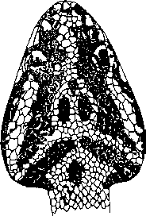

|
Digitized Inventory of Animal Resources: Reptilia ( Snakes ) Principal Investigator: Dr. R. J. B Alfred, Co-Investigator: Dr. Rama Krishna, Contributed by:
Dr. R.C.Sharma |
Trimeresurus jerdoni Gunther 1875
Taxonomic
Details
----- Scientific Name
----- Classification
----- Synonyms
----- Common Names
Other
Biological Details
----- Habit and
Habitat
----- Distribution
---------- Extent of
Occurrence
---------- Area of occurrence
---------- Altitude
---------- Population
-----
Conservation Status
-----
Diagnostic
Features
-----
Breeding system
Miscellaneous
Information
Literature
pit vipers
Genus . Trimeresurus Lacepede 1804.
This genus which comprises more than 22 species is distributed in India, Vietnam, China, Japan, Malaysia, Indo-Australian archipelago as far as Timor, the Philippine Islands and Celebes. The genus includes pit vipers with head is well demarcated from the neck; nostrils are small and pierced in nasal shield, eyes are moderately large, with vertical pupil; second supralabial is united with the loreal and form the anterior wall of loreal pit; upper surface of head is covered with small scales or larger shields; 2 or 3 postoculars are present, a deep pit is present on the lateral aspect of the face, between the preoculars and the loreal; a pair of large anterior genials is available, generally posterior pair is not present; scales of the body are in 17-31 rows; ventral shields are rounded; tail is moderately large or short; subcaudal shields are paired or in certain species, in rare cases are single; anal shield is not divided.
Range : South-eastern Asia : the Indo-Australian archipelago; the Philippine Islands; Celebes; and (if Bothrops is not regarded as a separate genus) South America.
Scientific Name : Trimeresurus jerdoni Gunther 1875
Family : Viperidae
Classification: Genus . Trimeresurus Lacepede 1804.
Synonyms:
Common Names: greenish-yellow
pit-viper
HABIT & HABITAT Inhabits only the areas at high altitude up to 9000 feet. The snake is viviparous and produce 4-8 young at a time (7-8 inches in a length) in August and September.
Distribution: Assam as far west as the Khasi Hills.
Altitude:
Conservation status: Fairly Common
Length : Total length : Male 1340 mm., tail 22.5 mm., female 1410 mm. tail 230 mm.
Body : Head covered with small, unequal, smooth scales. Hemipenis extends up to the 14th caudal plate; forked opposite the third caudal plate; the distal half of the organ is calyculate; the proximal portion is with spines; the spines are in the area remote from the sulcus and are much longer than those present adjacent to it.
Scales : Scales in 21 (rarely 23) rows at mid-body, strongly keeled. Ventrals 164-193. Subcaudals 44-78. Tail not prehensile.
Colouration : The dorsal colour is greenish-yellow or olive above, with a dorsal series of black-edged reddish-brown or almost entirely black spots and a series of more or less vertical spots along the sides. Head black above with fine yellow lines symmetrically arranged. A black temporal streak present. Belly yellow, much spotted or marked with black, the posterior part and tail almost entirely black.
Breeding Biology : The snake is viviparous and produce 4-8 young at a time (7-8 inches in a length) in August and September.

Trimeresurus jerdoni Gunther : Head : Dorsal view